What is Multiplication?
Multiplication is when we add the same number a certain number of times.
When we read or say a multiplication problem we say, "A number times another number equals a number" or,
"A number multiplied by another number equals a number".
Different Parts of a Multiplication Problem
The first number in the problem is called a multiplicand.
The second number is called a multiplier.
A common name they share is a factor. This is what most people call both numbers.
The answer to a multiplication problem is called a product.
The order of the numbers don't matter when multiplying. For example, 2 x 6 is the same as 6 x 2
Multiples Tips and Tricks
Multiples of 0
Every number times 0 equals 0, so the only multiple of 0 is 0 itself.
Multiples of 1
Every number times 1 equals itself, so all numbers are a multiple of 1
Multiples of 2
Multiples of 2 are even numbers
Multiples of 3
A number is a multiple of 3 if the digits in the number add up to a multiple of 3.
This can be done until you're sure the sum is a multiple of 3.
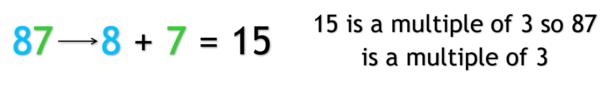
You can keep adding the digits until the sum is a single digit and see if the sum is a 3, 6, or 9, which are
multiples of 3.
Multiples of 4
A number is a multiple of 4 if the digit in the tens and ones place make a number
that is a multiple of 4. In other words, if the number made of the last two digits is a
multiple of 4. Or if the ends in 00.
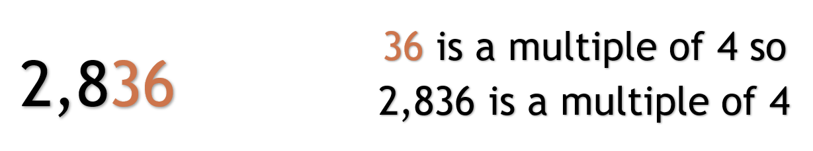
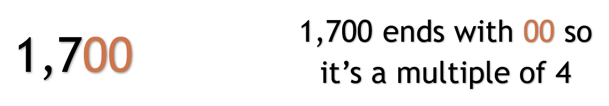
Multiples of 5
The last digit, the digit in the ones place is a 5 or a 0. The number ends in a 5 or a 0.
Multiples of 6
A number is a multiple of 6 if the number is a multiple of 2 ADD and multiple of 3.
Multiples of 7
A number is a multiple of 7 if you take the last digit of the number and times it by 2,
then take that and subtract it from the number without the last digit. If the answer is a 0
or a multiple of 7, then number is a multiple of 7.
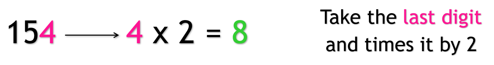
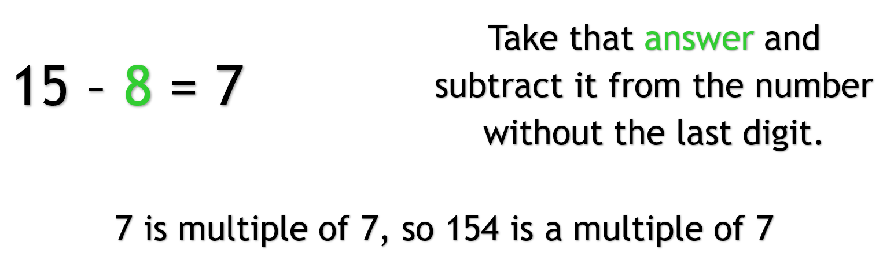
If still unsure, you can keep going by repeating the steps with the next digit.
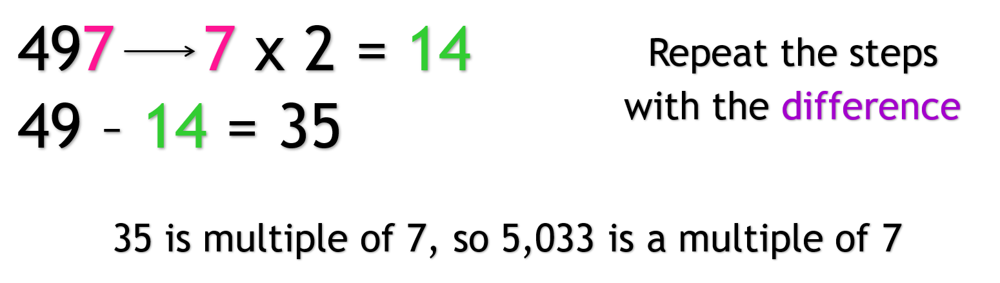
Multiples of 8
If the digits in the hundreds, tens, and ones place make up a number that is a multiple of
8, then the number is a multiple of 8. In other words, a number is multiple of 8 if the
number made up by the last three digits is a multiple of 8. Or the number ends in 000.
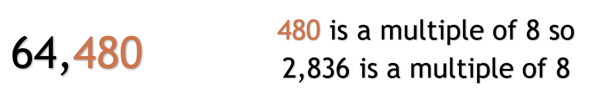
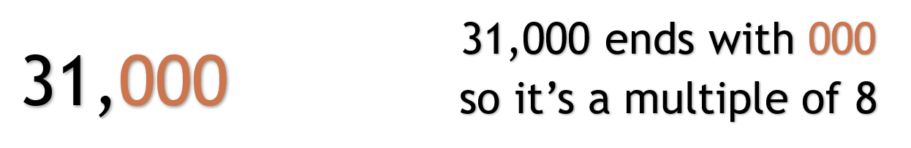
Multiples of 9
If the sum of the digits is a multiple of 9.

Can keep going until the sum is a single digit and see if it is a 9.
Multiples of 10
The last digit, the digit in the ones place is a 0. The number ends in a 0.
Multiples of 11
Add every other digit starting at the first number. Add every other digit starting at the
second number. If the difference between the two numbers is 0 or a multiple of 11, the
number is a multiple of 11.
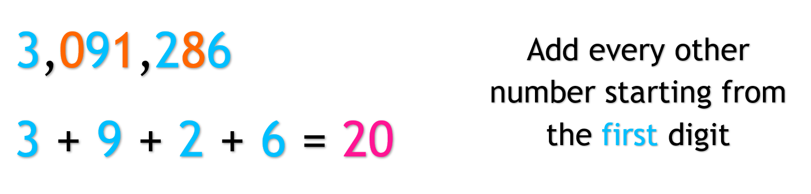
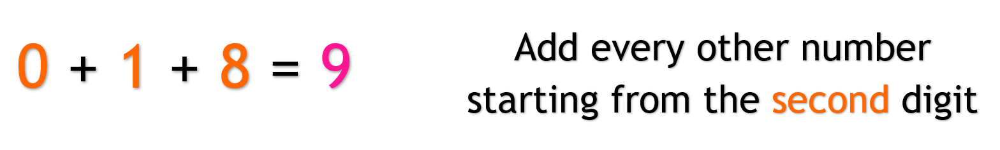
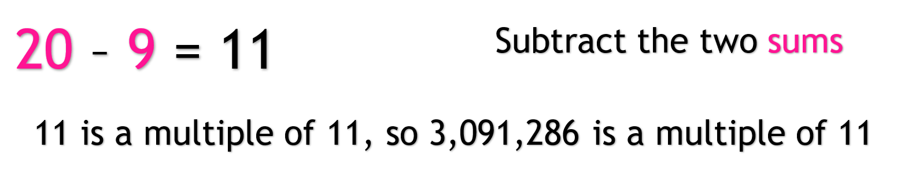
Multiples of 12
Multiples of 12 are multiples of 3 AND multiples of 4